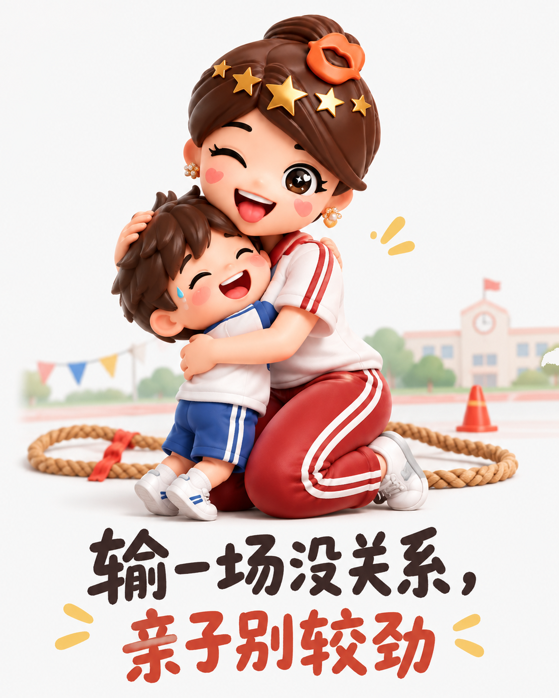
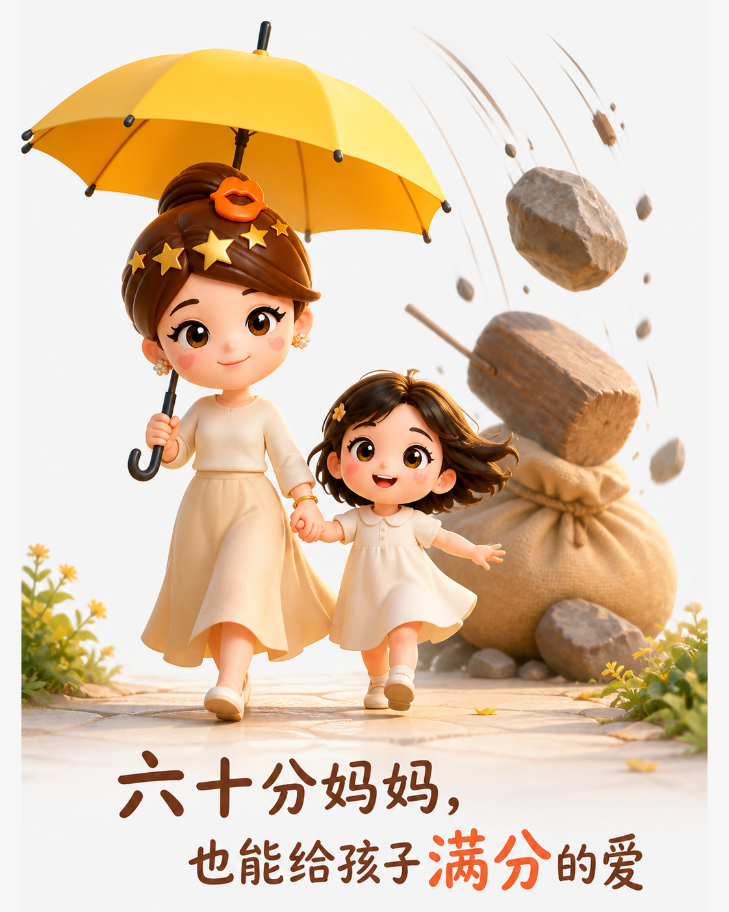
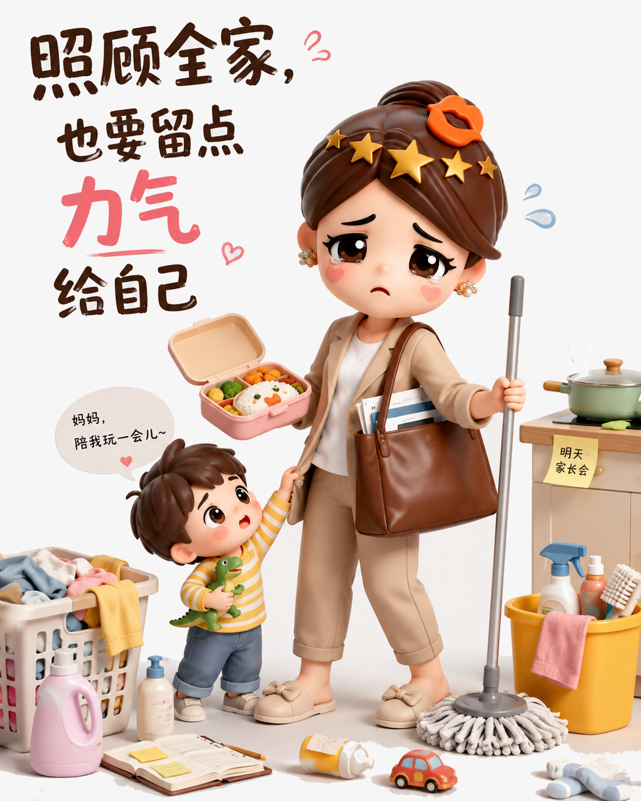

别把母爱活成一张成绩单
别把母爱变成考核表。
先放下比较
运动会输了，孩子把责任归到妈妈身上。她没有争辩，只把失败变成笑话：亲子相处，不必事事赢。

家里不必完美
精致手工、可爱便当、全对作业、随叫随到，再加一份收入，像张填不满的成绩单。偶尔普通，家也不会失去温度。

把余力还给自己
真正的底线，是大人和孩子都平安健康。少一点消耗，多一点休息和笑声；六十分的妈妈，也能给孩子稳定而真诚的爱。

别把母爱变成考核表。
运动会输了，孩子把责任归到妈妈身上。她没有争辩，只把失败变成笑话：亲子相处，不必事事赢。

精致手工、可爱便当、全对作业、随叫随到，再加一份收入，像张填不满的成绩单。偶尔普通，家也不会失去温度。

真正的底线，是大人和孩子都平安健康。少一点消耗，多一点休息和笑声；六十分的妈妈，也能给孩子稳定而真诚的爱。
